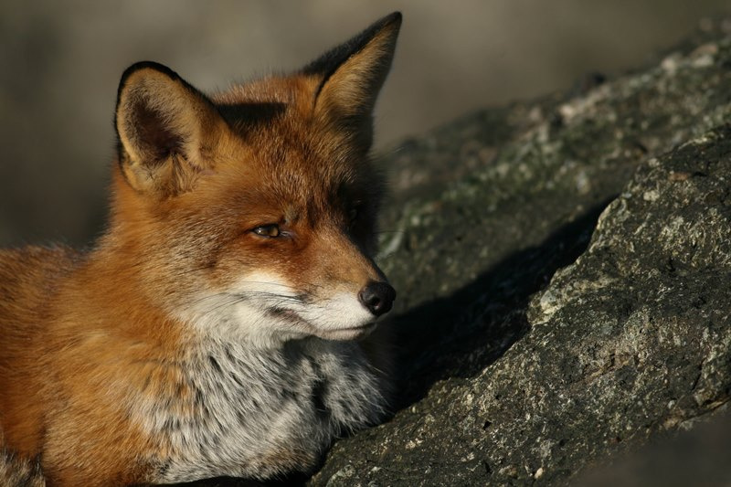

Groen en houtopstanden
Bomen kappen en ecologisch onderzoek
Bij kap lopen twee regimes naast elkaar die niets met elkaar te maken hebben: de regels over de houtopstand zelf, en de bescherming van de dieren die erin zitten. Voldoen aan het ene zegt niets over het andere.
Direct aanvragenSpoor één: valt de boom onder het houtopstandenregime?
Dat hangt af van de bebouwingscontour houtkap, de opvolger van de bebouwde kom uit de oude Boswet. Ligt de boom buiten die contour, dan geldt een meldplicht vóór het vellen en een herplantplicht daarna. Ligt hij erbinnen, dan vervalt dat, maar kan de gemeente nog steeds een kapvergunning of een APV-regeling hebben. Beide sporen kunnen dus tegelijk spelen, of geen van beide.
De meldtermijn verschilt per provincie. Zuid-Holland vraagt bijvoorbeeld een melding van ten minste vier weken vooraf, maar niet eerder dan veertien maanden van tevoren. Wie dat verkeerd inschat, staat met een aannemer klaar die nog niet mag beginnen.

De contour is ouder dan u denkt, en dat is precies het risico
De bebouwingscontour wordt door de gemeente vastgesteld in het omgevingsplan. Provincies publiceren hem als kaartlaag, maar dat is een afgeleide: het omgevingsplan is bepalend. Veel gemeenten hebben bovendien de oude Boswet-grens ongewijzigd overgenomen. In Gelderland staat voor Arnhem nog een vaststellingsdatum uit 2004. Juridisch geldig, maar het betekent dat de contour niet meebeweegt met twintig jaar nieuwbouw. Bij een plangebied aan de rand van de bebouwing is dat waar het misgaat, en dat is nu juist waar veel projecten liggen.
Spoor twee: wat zit er in de boom?
Dit spoor staat volledig los van de contour en geldt overal, ook in een achtertuin binnen de bebouwde kom. Waar wij naar kijken:
Jaarrond beschermde nesten. Horsten van buizerd, sperwer, havik en ransuil zijn ook buiten de broedtijd beschermd. Een leeg nest is dus geen vrijbrief. Bij roek gaat het bovendien om de kolonie als geheel.
Verblijfplaatsen van vleermuizen. Boombewonende soorten als rosse vleermuis en watervleermuis gebruiken holten, scheuren en loszittende schors. Die zijn van de grond af vaak niet te zien, en een enkele inspectie sluit gebruik niet uit omdat de dieren tussen verblijfplaatsen wisselen.
Algemene broedvogels. Buiten het broedseizoen werken is meestal de eenvoudigste route. Kan dat niet, dan is een broedvogelcheck kort voor aanvang het alternatief.

De winterinspectie is het onderschatte hulpmiddel
Grote nesten zijn het best in beeld te brengen in de bladloze periode. Zo'n winterinspectie staat los van het broedseizoen en kan een project dat in de winter klaarstaat uit de wachtstand halen, in plaats van dat het tot het voorjaar stilligt. Dat is bij kapwerk vaker bruikbaar dan opdrachtgevers vermoeden, omdat kap juist vaak in de winter gepland wordt.
Gaat het om één boom in uw eigen tuin?
Dan is dit meer dan u nodig heeft. Op onze publiekssite HIEON staat kort uitgelegd waar u op moet letten bij een boom in de tuin (opent in een nieuw tabblad), inclusief wanneer het meestal geen probleem is.
Lees de uitleg op HIEON (opent in een nieuw tabblad)Veelgestelde vragen
Moet ik voor het kappen van een boom ecologisch onderzoek laten doen?
Dat hangt af van wat er in de boom zit, niet van de omvang van de kap. Ook een enkele boom kan een jaarrond beschermd nest of een verblijfplaats van boombewonende vleermuissoorten bevatten. Een quickscan stelt vast of dat aan de orde is en of vervolgonderzoek nodig is.
Wij hebben een kapvergunning. Zijn wij daarmee klaar?
Nee. Een kapvergunning of een melding onder het houtopstandenregime gaat over de houtopstand zelf. De bescherming van de dieren in de boom staat daar volledig los van en heeft een ander bevoegd gezag. Voldoen aan het ene spoor zegt dus niets over het andere, en beide kunnen tegelijk spelen.
Het nest in de boom is leeg. Mag ik dan kappen?
Bij een jaarrond beschermd nest niet. Horsten van buizerd, sperwer, havik en ransuil zijn ook buiten de broedtijd beschermd, en bij roek gaat het om de kolonie als geheel. Alleen bij algemene broedvogels geldt dat een leeg nest buiten het broedseizoen geen belemmering vormt.
Wij kappen in de winter, buiten het broedseizoen. Is dat voldoende?
Voor algemene broedvogels meestal wel, maar het lost twee andere dingen niet op. Jaarrond beschermde nesten zijn ook in de winter beschermd. En voor boombewonende vleermuissoorten is de winter juist de periode waarin holten als winterverblijf in gebruik kunnen zijn. Buiten het broedseizoen werken is dus een goede eerste stap en geen sluitend antwoord.
Vraag een offerte aan
Vul in wat u van plan bent en waar. Hoe vollediger het beeld, hoe gerichter ons voorstel. Wij reageren binnen 24 uur met een vrijblijvende offerte of met een vraag als er nog iets ontbreekt.
Liever niet via een formulier? Mail ons op info@vanderhamecologie.nl, of stel eerst uw vraag via de contactpagina.